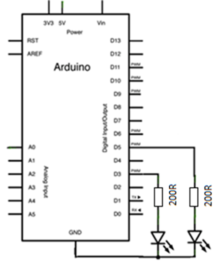
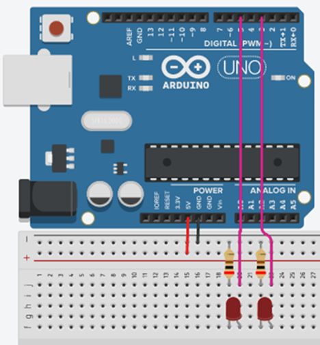
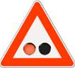
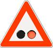
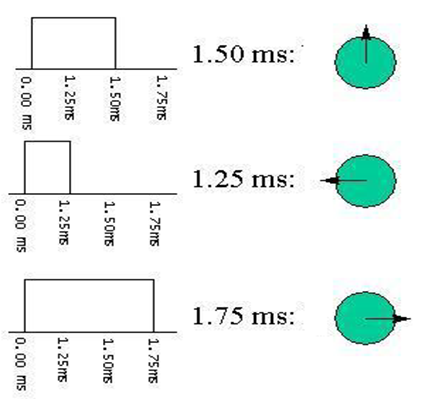
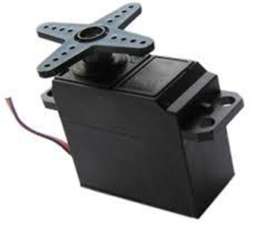
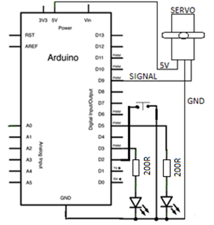
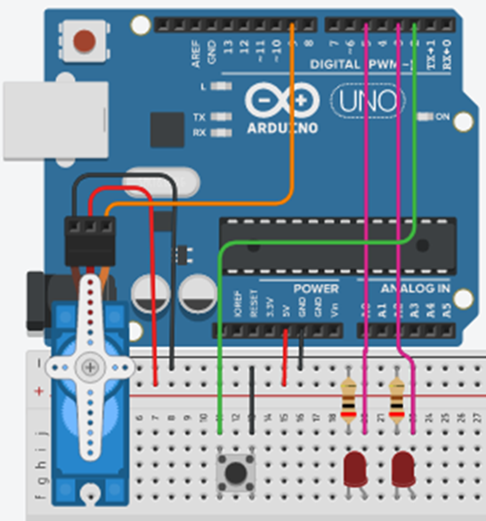

VJ6-Izrada pružnog prijelaza
6.1 Svjetlosna signalizacija pružnog prijelaza
Električna shema

Montažna shema

Nadopunite program za svjetlosnu signalizaciju pružnog prijelaza. Funkcija delay() je 300 ms.
Zadatak u 2 koraka:
1) LIJEVA svijetli 300 ms
2) DESNA svijetli 300 ms
Pokrenite simulator UnoArduSim v1.4.2. ili TinkerCad.
Nadopunite program ( HINT: 6 redaka programa )
void setup() {
pinMode(5, OUTPUT);
pinMode(3, OUTPUT);
}void loop() {
}
Kliknite RUN ( EXECUTE > RUN ) ili START SIMULATION na Tinkercadu
Svjetla se izmjenjuju naizmjenično u pauzama po 300 ms.
6.2 Izrada pružnog prijelaza
Pružni prijelaz ,uz svjetlosnu signalizaciju, najčešće ima i rampu koja se diže i spušta.
Kao senzor dolaska i prolaska vlaka koristit ćemo tipkalo a kao motor za dizanje i spuštanje rampe koristit ćemo servo motor.
Servo motor je uređaj koji ima izlaznu osovinu. Osovina se može postaviti na određene kutne položaje slanjem programiranog signala. Sve dok je programirani signal stalan servo će zadržati kutni položaj osovine. Ako se programirani signal promijeni, mijenja se i kutni položaj.
Najčešće se servo koristi se za kontrolu kutnog kretanja od 0 do 180 stupnjeva. Kut se određuje trajanjem impulsa koji se dovodi na ulaz uređaja. Takav programirani signal nazivamo pulsno širinskom modulacijom – PWM ( POZNATO ?). Frekvencija je stalna, f = 50 Hz , T = 20 ms.
Ulazni signal (od 0 do 180 stupnjeva)

Servo motor

Električna shema

Montažna shema

Upišite sljedeći program
#include <Servo.h>
int pos = 0;
int x = 0;
int y = 1;
int a = 0;
int b = 0;
Servo servo;
void setup(){
servo.attach(9);
pinMode (2, INPUT_PULLUP);
pinMode (3, OUTPUT);
pinMode (5, OUTPUT);
}void loop(){
int val = digitalRead(2);
if (val == 0 && y == 1) x = !x ;
y = digitalRead(2);
if (x == 1) pos = pos + 2;
if (pos >= 90) pos = 90;
if (x == 0) pos = pos - 2;
if ( pos <=0) pos = 0;
servo.write(pos);
if (pos != 0) { b = a; a = !a; }
else { b = 0 ; a = 0; }
digitalWrite(3, a);
digitalWrite(5, b);
delay (300);
}
Kliknite RUN ( EXECUTE > RUN ) ili START SIMULATION na Tinkercadu
Pritiskom tipkala ( NAJMANJE 300 ms ) uključujemo signalizaciju i spuštamo rampu.
Ponovnim pritiskom tipkala ( NAJMANJE 300 ms ) dižemo rampu i isključujemo signalizaciju.
Ako ne radi, provjerite program i pokušajte ponovno.
#include - ovom naredbom se od prevoditelja traži da uključi u program datoteku Servo.h
koja sadrži informacije nužne za korištenje funkcija servo motora.